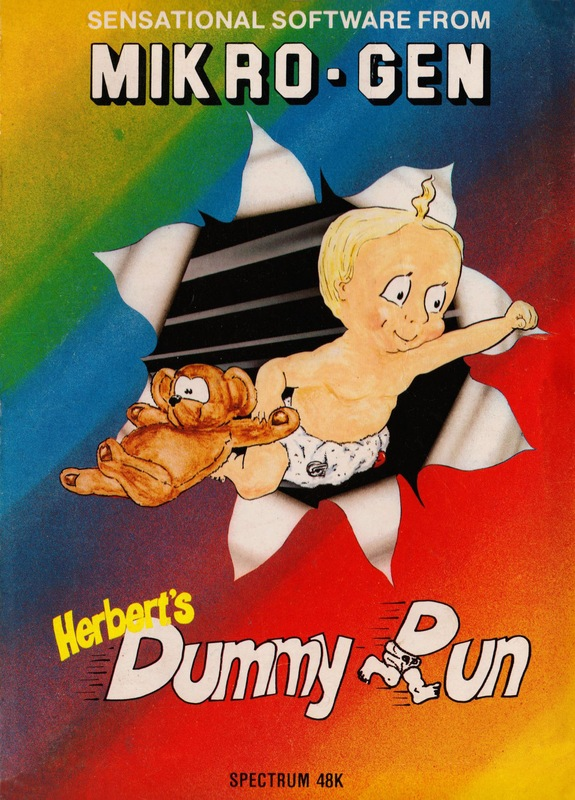
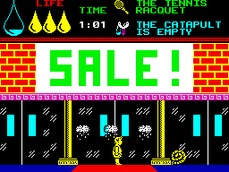
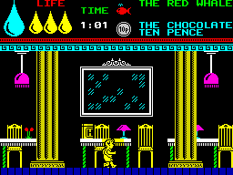
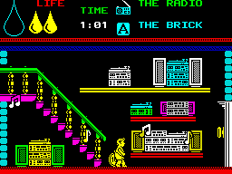

Herbert's Dummy Run


{kind=link}

| Publisher: | Mikro-Gen Ltd |
| Price: | £9.95 |
| Year: | 1985 |
| Source: | CRASH, Issue 18 |

Now you should all remember Herbert. He’s the little chap from the Week family whose ineptitude became world renowned in Everyone’s a Wally. In this game Herbert has become separated from his Mum and Dad during a visit to the local department store. It is up to you, the player to guide him back to his parents who are waiting for him in the ‘LOST AND FOUND’ department.

The game begins with Herbert in the toy department at 1 pm: the store closes at 5.30 and you have four and a half hours to reunite Herbert with his parentals, since the game is played in real time. In both style and presentation Herbert’s Dummy Run is similar to Everyone’s a Wally, which is not surprising as it’s the third game in the Wally trilogy! Dummy Run is a graphical adventure game that calls for a high degree of arcade skill as well as a degree of lateral thinking. The opening screen is typical of the game: Herbert finds himself standing on a box in the toy department; you notice at the top of the screen a series of shelves loaded with a wide variety of toys. How can Herbert reach up there? Well of course the box he’s standing on is a Jack-in-the-box, and when the key has been fetched the spring action will propel him up onto the shelf.
As with the other Wally games, many of the screens take the form of well known arcade games. One screen can only be solved by dismantling a wall, ‘Breakout’ style — if you manage this the resultant pat on the head is well deserved.

The game would be too easy if you could pick up and carry every object that you came across. Only being able to carry two objects at a time forces you to do a little forward thinking. At the top of the screen you are reminded of what objects are in your possession — the one that you have had for the longest is automatically exchanged for another ‘collectable’ piece as you walk past it. As you explore the store looking for the ways and means to solve the game you are under constant pressure from a wide variety of mobile ‘thingies’. You have three lives and when you come into contact with some of the nasties your energy, shown by a large tear that fills up, will be reduced until you escape the meanies, or lose that life. A few mobiles kill immediately on contact so you will have to learn to identify them quickly. You are able to reverse the drain on your energy by eating the sweets found scattered around the store.
For his efforts, Herbert is rewarded with his favourite jelly babies, and the closer he is to finding his parents the more he will get. All told the game extends for over twenty-five screens, but don’t expect Herbert to get fat on jelly babies too soon!
CRITICISM

‘I have mixed feelings about this game, on the surface it is an excellent program but I feel that Micro-Gen may be repeating the formula once too often. If you don’t mind that, then Herbert’s Dummy Run may be worth having. The graphics are excellent, even better than those in Everyone’s a Wally, the sound is reasonable and the colour is used well. The game is as infuriating as its predecessor and should please the arcade/adventure addicts. Those horrible colour attribute problems are still with us but they really can’t be helped, after a while you tend to ignore them. I think the asking price of £9.95 is a little steep — I feel the game would be much better value at £6.95. Overall it’s a very good program if you don’t mind more of the same. I hope Mikro-Gen’s next game is graphically as good but with a substantially different game format.’
‘Herbert’s Dummy Run contains graphics which are well up to Micro-Gen’s high standard. They are both colourful, large and detailed. The game is fun and very addictive and contains many mini games within its overall structure. While these mini games are nothing than fairly simple shoot-em-ups they add to the overall peril of the game. Herbert is destined to be another Micro-Gen star. At this rate I don’t think the Wally trilogy is ever going to stop, with all those characters to choose from. I’m glad they’ve only got one character in this one — let’s face it, when you’ve got five characters all stealing the object you need next, infuriating isn’t the word!’
‘Staying on the same lines as before — Herbert’s life while he grows up in a wildly strange place — Herbert’s Dummy Run is set in a large department store. Graphically it seems to be far better, perhaps it’s the use of more colour, or even more detailed characters. One room that I liked particularly was the one with a huge bed and lots of ‘Z’s floating around. Plenty of arcade sequences are included in the game, which follows on from the general idea of the previous Wally games and requires some thought to enable you to progress with it. I only wish that Mikro-Gen had included some other characters that wander about, as in some of their other games, but sequels are based on on the fact that the production is better in some way than the last game. Overall I think that this is another winner for Micro-Gen.’
| Use of Computer: | 90% |
| Graphics: | 90% |
| Playability: | 89% |
| Getting Started: | 83% |
| Addictive Qualities: | 90% |
| Value for Money: | 82% |
| Overall: | 90% |